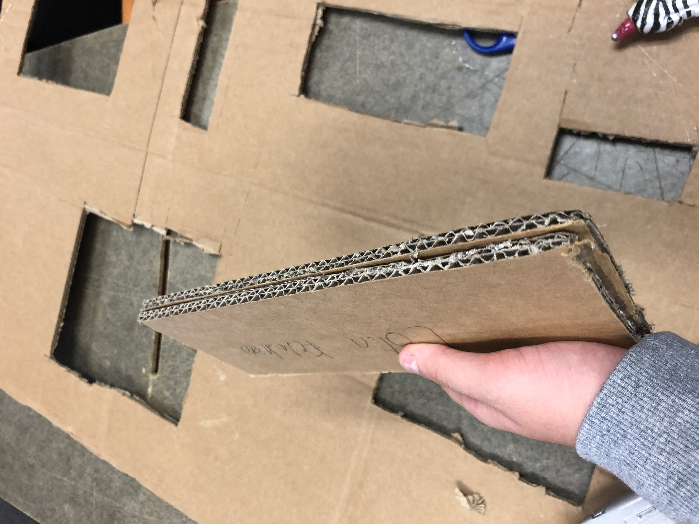
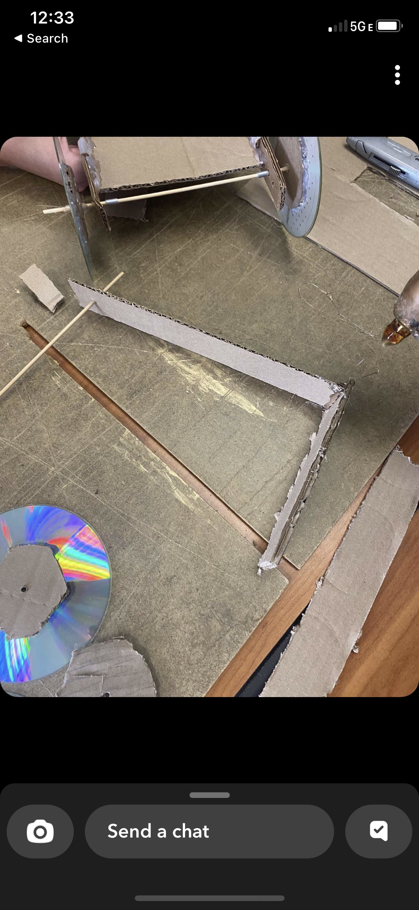
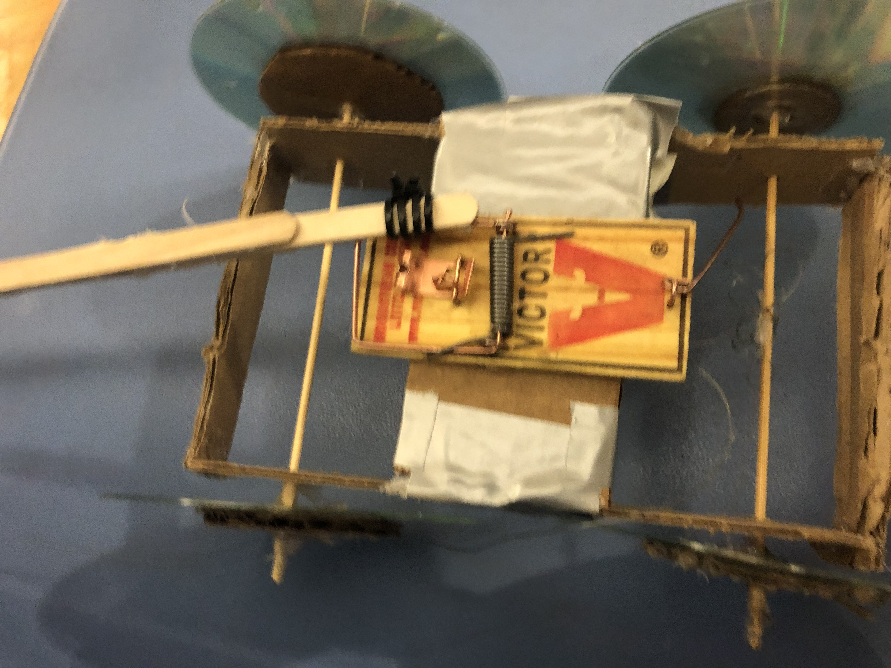
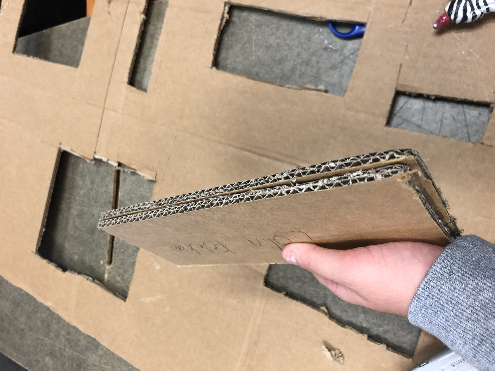
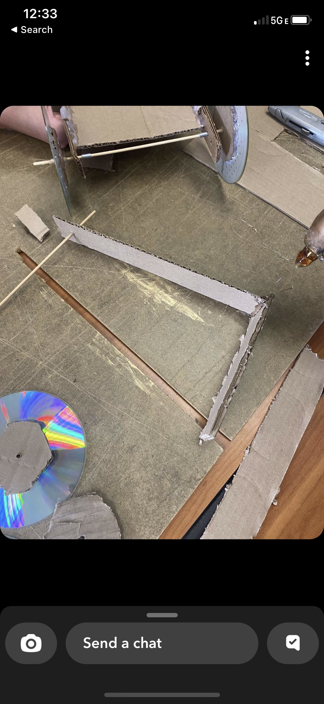
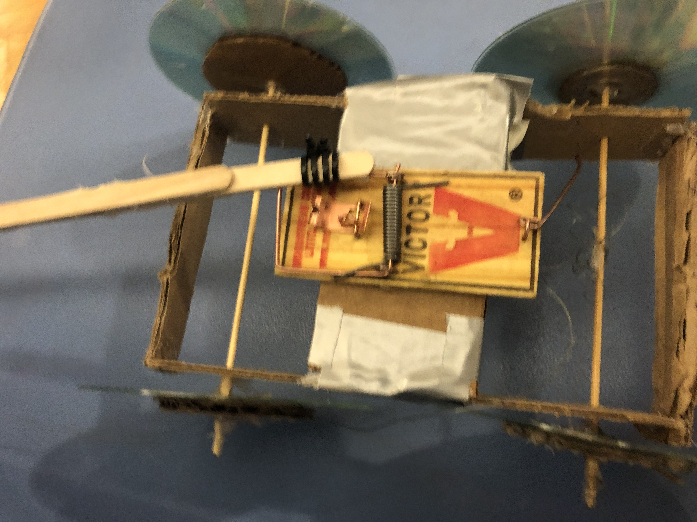

8/19/2022 Today I made a website wow im so happy
9/23/2022 This week we did our golberd machine and we did it, I don't remember challenge day but i'm guessing my group skipped it because we were beind on the golberd machine, we finished it and it all went well, we finished it.
9/30/2022 Mr.Poole got covid and he couldn't come to class for the whole week. We started to design a Prosthetic for any kind of animal and I designed a prosthetic for a elephant leg, because a lot of elephants loose legs and they are funny/big creatures. The class wanted to do a challenge day but Mr.Poole was absent so instead we just worked on our prosthetics in the time being.


10/14/2022 This week was a good week, We looked about aerospace engineering slides and we learned it. After that Mr.Poole announced that we had to make a bottle rocket next week and try to get it over the field goal or close to the field goal. For challenge day Mr.Poole gave us a paper and he made us get as close to or into a barrel, and most people made a paper airplane (including my group) but there were some people that made a ball, which was actually the best thing you could do in that situation. Ours was almost deadlast but it was a experience of a lifetime. WE also started to design our tinkercad for the rocket.
10/21/2022 This week we designed our bottle rockets, last week we designed a tinkercad for our rocket, or we started it. My group said we'll use coke and mentos. Our group started making our project and it went out good, but someone pointed out that you can use a lighter cardboard for your fins and that we should add paper around it to support it because we had a little hole from the glue gun because it was so hot it melted our 2L coke bottle. We did it and our group did horrible, First time our group used coke and mentos it went bad becuase someone already shaked it and the carbonation was gone from it. Then after that we added water to it and it worked pretty well, but I was suprised because I thought a lot of people's project would go flying but no ones did, most of ours just hit the floor or went in a loop. But I guess that is common for a high school engineering class.10/28/2022 This week we looked at Enviormental engineering slides and we learned a lot, After tht Mr.Pool challenged us to make a water purifier and my group nd me did very good in the project, or water was almost clear. I also drank it because of how clear it was.
11/4/2022 This week we learned Electrical Engineering, Mr.Poole gave us slides and we all listened carefully, I was really into Electrical Engineering because my dad is a Electrician and I want to learn more, because of curiosity so basically I've listen to his slides and then Mr.Poole announced we had a Quiz and we did the Quiz, and im sure i got like a 70-80% on the Quiz but I have no idea. After that Mr.Poole made us do a worksheet and told us that we're going to be doing the same thing but not on Tinkercad but in real life. I was so excited to hear this I almost jumped out of my seat.

11/10/2022 This week we started doing the Arduino board, For the first day I didn't know what I was doing but Mr.Poole helped me out, We created some circuits and I experimented a little, thank god I didn't short the bulb. The second day we did the same thing but with a multimeter, and me and my parenter did really good, I had a lot of fun doing it too and I was interestee in this beause my dad is a Electrician. Mr.Poole also helped us a lot which im thankful of. For the challenge day, We got a paper and had to decide if you would take a Math Class or if you would count to 1 Million, and my group choose Math Class rather then countng to 1 million. This week I had fun, like I always do.


11/18/2022 This week we programmed our Arduino board, To be honest I had no idea what we were doing but Mr.Poole like always, helped me out a lot. I programmed my arduino board really well, in my opinion. It was also really fun to do it with my partner, But I encountered a problem, right before the last day I didn't finish so I had to finish it at the end of the week, I barely finished it with 5 minutes to rest, So I'm doing my website at home for homework. In all, That was really fun and I would definetly do it again. For challenge day there was a lake called "Lake Carcinogen" and There were 2 chemicals in it, Bromide + Chlorine. Those were safe to drink, but If you add the sun to it, it makes "Bromate" which causes cancer and which is really bad. 600,000 people use the lake, its 10 square acres, and 60 million gallons i believe, My solution to that problem was to get a filter, that removes Bromate from the water, Theres a main pipe that goes to all the houses, so in the main pipe we would add a filter, which is pre-made and would take 1-2 days to install, Using the engineers and mechanics from the neighborhood, or anyone that will help us. And then boom, people get safe drinking water, cancer free. But the problem is, It would take too long. The solution Mr.Poole told us about, which they really used was small rubber balls that floated on the surface, which took a short time, just get them and dump them in the water, Plus there only $0.60 dollars, which is pretty cheap. But I had fun this week and I look forward to next week aka thanksgiving and aka we have 1 week off :)!
12/2/2022 This week we learned about Civil Engineering, We learned about the different typed of Civil Engineering, I was most interested in Infanstructure engineering (excuse my spellng). We had to build a bridge to support a bucket with water, I was really scared for this challenge but later I found out it might be easy because we have 3 weeks to do it and Mr.Poole will help us a lot. For challenge day we didn't do anything, and I'm kinda sad because I lke challenge day. I'm going to write a "documentation" or a "journal" for ur bridge and hope I get a good grade.
12/9/2022 This week all we did was build our bridges, and I think my group made our bridge pretty well, For challenge day which was super fun Mr.Poole bought a game called "Freeways" I had that game on my phone so I told him I had it, and then when it was class time he didn't let me do any of it and so we ended up loosing to another group, 2-4 (we were 2) if i'm correct, I also told Mr.Poole I hate him, and I regret saying that, I was just mad we lost because I couldn't do anything. But this week we had fun, and I also wrote the "documentation/journal" for our bridge, and I just wanna get a good grade in this class.
1/13/2023 Ths week was the returning week from christmas break, My christmas break was fun. This week, we started to learn about "shark tank" and how we're going to start "making" a new shark tank product, and show it to 3 staff members, including Mr.Poole. For challenge day we didn't do anything except start making our slides for our shark tank product. My group me, Alex A and Parth did a cable cutter, that cut the cables. Mr.Poole said we're
1/20/2023 This week me and my group, we started to present our shark tank tool, and me and my group did pretty god. Which I'm so happy about. We didn't do challenge day this week. But I'm still kinda happy.


1/27/2023 This week with Mr.Poole we made oobleck and it was a really fun experience. Me and my friend we made ooleck and we had a lot of fun, but we were scared of gettng it on our sweater. Then, later in the week we had to make a project, a Moustrap car, A arduino car, or a idea of the school, to make its structure better. Me and abdul picked arduino car and we started working on it. We fought a lot, but we are having fun while doing this.


 2/17/2023 This week was a really nice week. Me and abdul contined on our arduino car, We finished the wheels for the car, so all we needed to do next week was to wire the arduino board and wheels, then make sure all of the coding is correct. We made some stick thingy for cosmetic on the front, but we lost hope on doing the arduino car. We had no challenge day and if im honest on friday we did basicaly nothing for our arduino car.

2/24/2023 This week me and abdul lost all hope, on monday we did basically nothing but on tuesday we asked Mr.Poole to switch to an mousetrap car because we lost hope on the arduino car and we had 0 experience coding and it woul be super hard for us to do. We finished everything this week, except we forgot to finish the coding and wiring for the Arduino board, which we plan to do next week and finish it before wendsday the end of the project.

3/3/2023 This week me and abdul finished working on the mousetrap car. I stayed afterschool for like 1 hour to finish our project an help Mr.Poole clean.That afternoon, I finshed the project and it was ready for testing tomorrow, but on the testing it went the wrong way and our sticks were bent so me and Abdul thought that was the problem, so it look us 2 days to finish the new popstickle stick, and on the last day where we were going to race, we ducktaped it to the popsticle stick and it worked somehow, the first launch was bad but the 2nd launch was really nice. I was satisfied but in the middle of the project we changed meaning we only had 1 week to do the mousetrap car, and with that much time im happy with my results. On friday we had a sub, and we worked on updating our websites and adding images.

2/17/2023 This week was a really nice week. Me and abdul contined on our arduino car, We finished the wheels for the car, so all we needed to do next week was to wire the arduino board and wheels, then make sure all of the coding is correct. We made some stick thingy for cosmetic on the front, but we lost hope on doing the arduino car. We had no challenge day and if im honest on friday we did basicaly nothing for our arduino car.

2/24/2023 This week me and abdul lost all hope, on monday we did basically nothing but on tuesday we asked Mr.Poole to switch to an mousetrap car because we lost hope on the arduino car and we had 0 experience coding and it woul be super hard for us to do. We finished everything this week, except we forgot to finish the coding and wiring for the Arduino board, which we plan to do next week and finish it before wendsday the end of the project.

3/3/2023 This week me and abdul finished working on the mousetrap car. I stayed afterschool for like 1 hour to finish our project an help Mr.Poole clean.That afternoon, I finshed the project and it was ready for testing tomorrow, but on the testing it went the wrong way and our sticks were bent so me and Abdul thought that was the problem, so it look us 2 days to finish the new popstickle stick, and on the last day where we were going to race, we ducktaped it to the popsticle stick and it worked somehow, the first launch was bad but the 2nd launch was really nice. I was satisfied but in the middle of the project we changed meaning we only had 1 week to do the mousetrap car, and with that much time im happy with my results. On friday we had a sub, and we worked on updating our websites and adding images.
